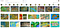

Mapping game maps and interactions using brand names


what if the world was filled with brands? what if all buildings were brand names? what if our homes had brands we hold and care about printed on the floor? what if we could leave our homes and go into cities populated with brand names and logos? what if we could interact with these brands and increase our status as players because this is about a game idea? a world like this
what if you leave your home you go straight to an Industry that what we all do every day? what if our presence in a brand-building activates content about this brand and its industry that we can consume to learn and increase our status? What if it is a learning platform
there is an infinite way to build a gaming map based on brand names, logo,s and industries and an infinite number of interactions we can make into this game map with the relationship between us and these brands and the relationship between these brands. Mapping is a core operation in a dynamics system because it associates things with others. As game designers, we should find all interesting game maps and map each of them with the corresponding Exciting interactions that can happen with this game map.
Text games still matter like video games. I do have a great text games platform and a great video game concept here and happen to be the creator of the m…. c…. g…... For a humble man in front of his computer in his born country in Africa, this is not something easy to come up with without the help of The Only One who really has POWER. It just happens that I was involved in things that had a huge impact on our world and I was just a young still naive man and stranger in a country I entered for learning, I learn a lot with these things and they gave me the opportunity to see better and differently.
growing virtual trees will for sure never make this world greener and I hope for you and wish you that like me you know the relationship between mapping and trees and all these key algorithms that play with trees like base data structures. A tree can be an interesting representation form of the game maps and the goal of growing it is also an interesting gameplay concept like this other gameplay with birds and 3d tree..